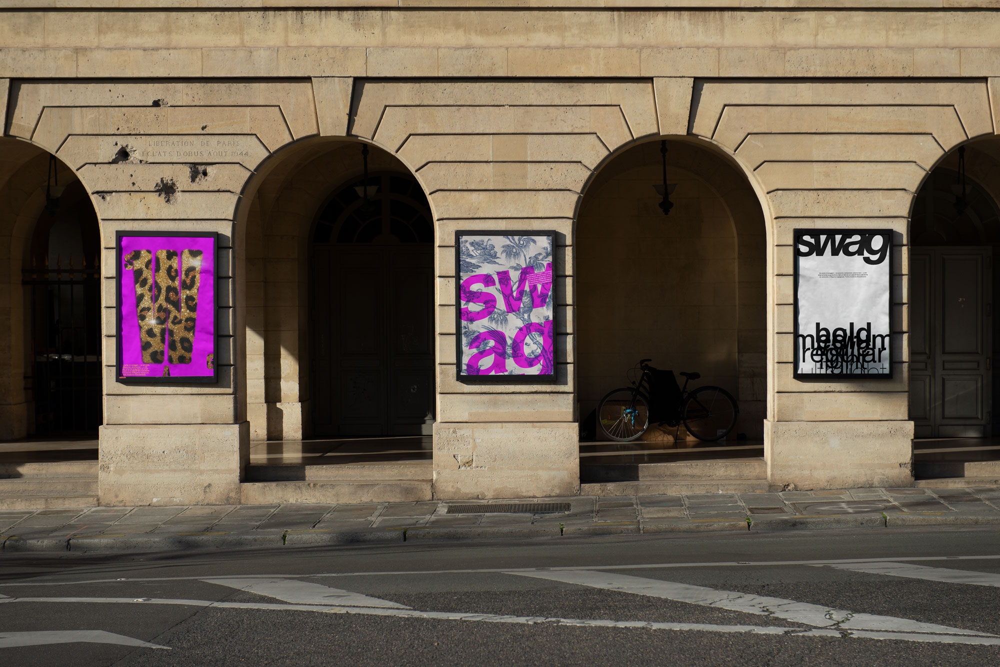
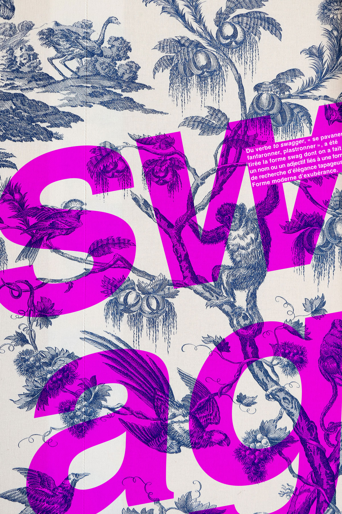
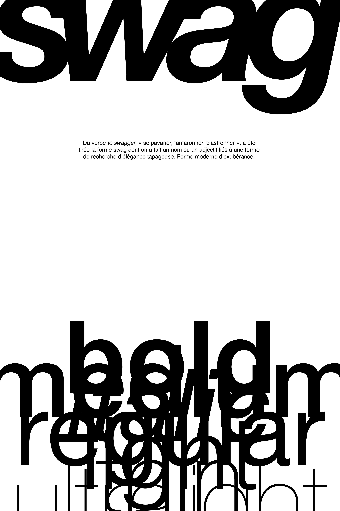

SWAG
TYPOGRAPHIQUE
Triptyque d'affiches typographiques sur le néologisme « swag ».
Les trois affiches fonctionnent comme trois niveaux de lecture différents :
– sWag IS NOT DEAD explorant le swag au sens premier du terme, en tant que forme moderne d'exubérance ;
– Question de point de vue représentant swag en tant qu'adjectif fonctionnant comme une étiquette, transformant quoi que ce soit en swag peu importe les marqueurs socio-culturels ;
– Argument d'autorité soulignant la manière dont le mot « swag » une fois substantivé s'autonomise et s'élève au-delà du fouillis complexe créé par le langage, devenant même une graisse typographique, une façon d'écrire et de parler à part entière.




Affiches 400 x 600 mm
Projet ÉSAD